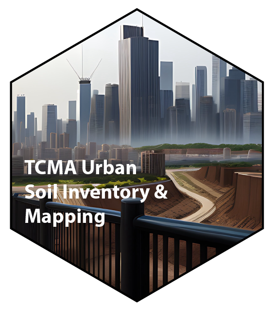

TMCA Urban Soil Mapping
Preface

This quarto book documents the metadata architecture for “Implementing an Urban Soil Survey Framework in Minnesota” - USDA-NRCS Award #NR236322XXXXC008.
Project Description
[From Project Proposal] The purpose of this agreement, between the U.S. Department of Agriculture, Natural Resources Conservation Service (NRCS) and University of Minnesota (Recipient), is to harness existing collective resources, including non-NRCS research, data, specific expertise, and analytical capacity of soils in urban environments to complete a soil survey update. With much of the US population living in Urbanized Areas (UAs), there is a need for improved understanding of soil suitability’s, and limitations in these environments. Soil characterization information is needed in these areas as the resources are intensively managed, while current legacy soil survey products are largely out-of-date and provide limited use. Additionally, this agreement will promote the understanding the dynamic nature of soil properties in urban environments and expanding the use of new tools in support of urban agriculture.
Structure and Deliverables
This document contains metadata for each of the grant deliverables, as well as general project metadata and information. Each of the deliverables also has a unique GitHub repository nested under the tcma-urban-soil-mapping organization. These deliverables are:
1. Updated Urban Soil Survey for Minneapolis/St. Paul/Bloomington MSA & DSP Investigation. We will harness existing collective resources, data, and analytical capacity, including non-NRCS research to complete a soil survey update for urban soils in the Minneapolis/St. Paul/Bloomington Metropolitan Statistical Area (MSA). We will design and execute a dynamic soil properties (DSP) investigation centered on urban agriculture.
2. Documented mapping guide. We will document a mapping guide and conventions adaptable to project work in other census qualifying urbanized areas throughout the state of Minnesota.
3. Technical assistance and resources. We will provide technical assistance and training on geophysical tools and sample design to support onsite analysis. We will also develop resources to support site evaluation, monitoring, testing, or assessment in support of conservation activity plans.
4. Engagement and outreach. We will conduct series of community engagement, co-learning, and outreach opportunities.
Key Personnel
- Nic Jelinski; Associate Professor, University of Minnesota (PI)
- Joe Brennan; State Soil Scientist, NRCS
- Nora Pearson; Researcher, University of Minnesota
Additional Collaborators
Funding Source and RFP
This project was funded by a cooperative agreement bewteen the USDA-NRCS and the University of Minnesota.